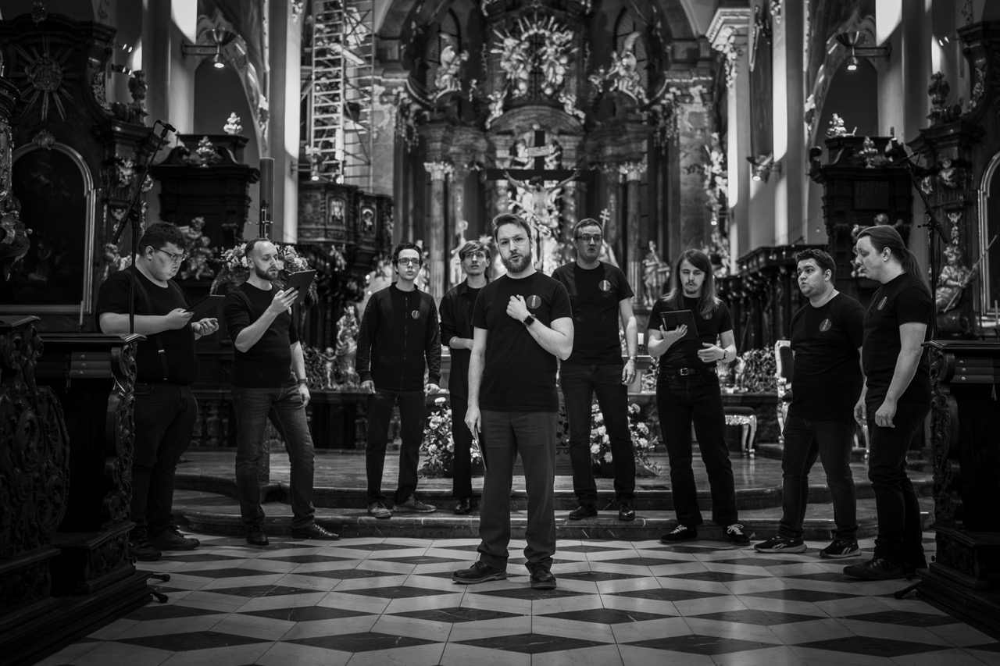
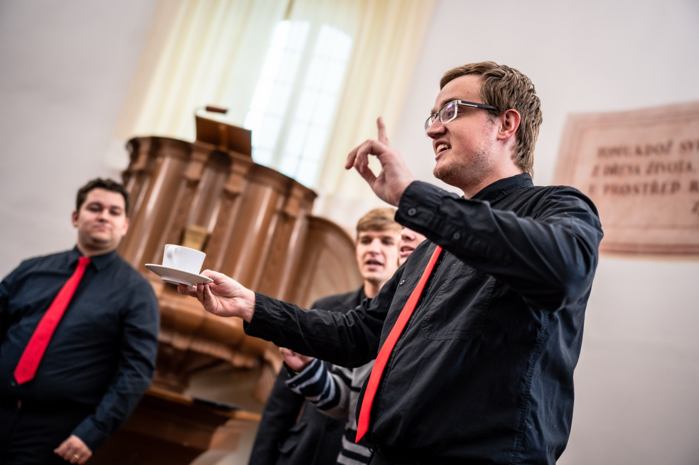
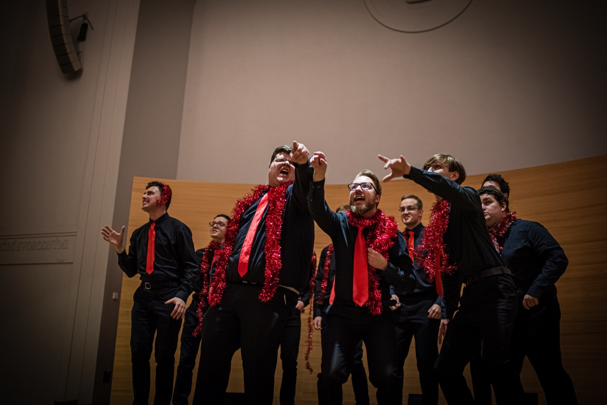
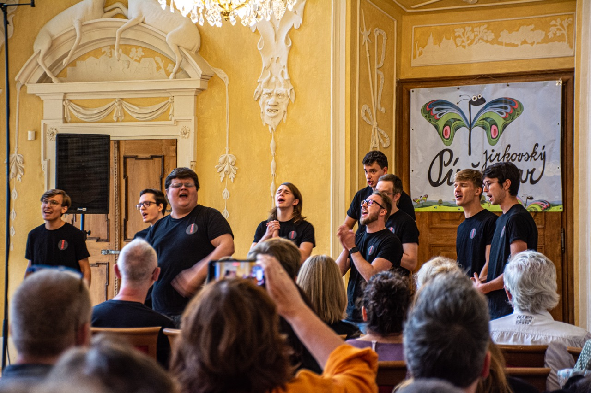
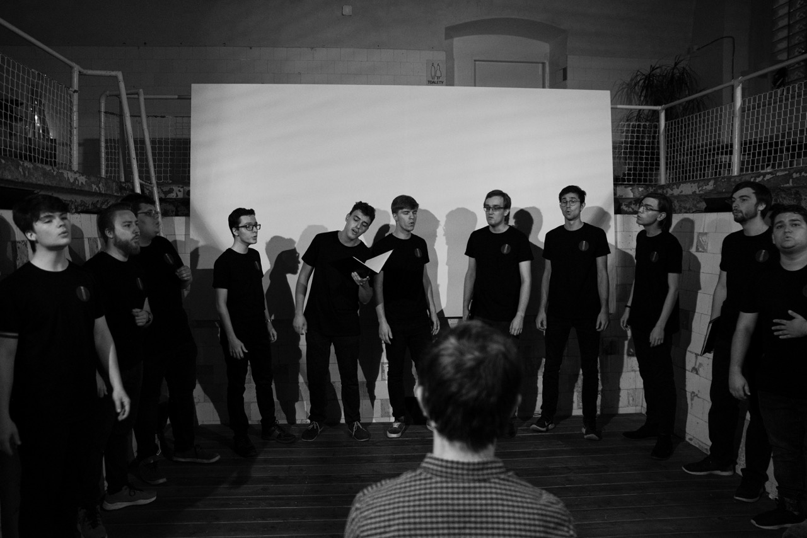
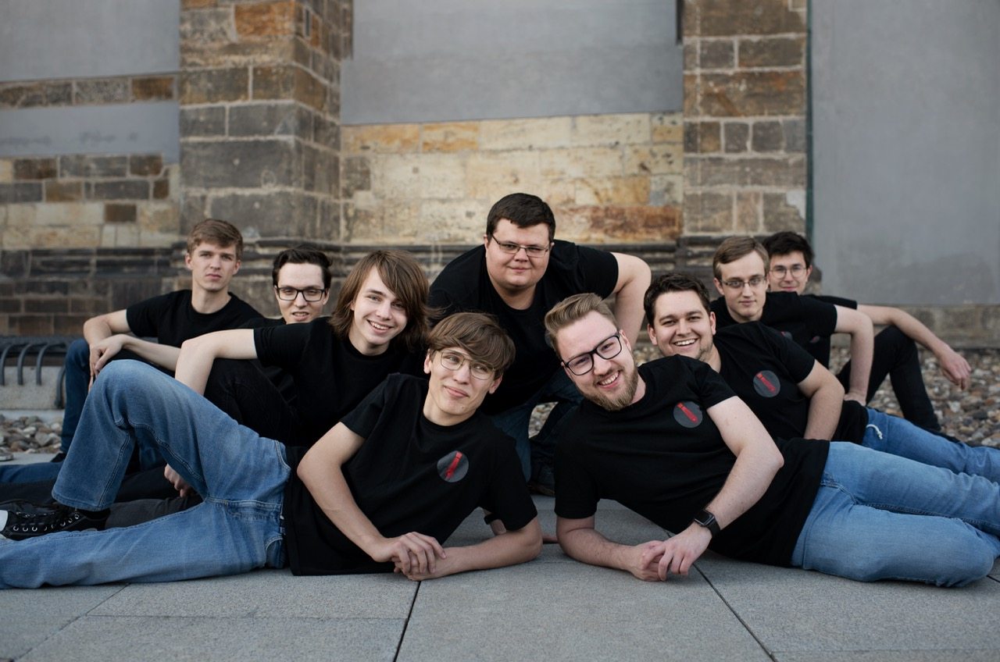

Praha · Od roku 2015
Mužská a cappella skupina z Prahy. Pop, jazz i swing – na pódiu i na vaší akci.






Kdo jsme
Pražská vokální skupina působící od roku 2015, která se pohybuje na pomezí klasické sborové tvorby a moderní populární hudby.
Za dobu svého působení jsme vystoupili na desítkách koncertů, festivalů i zahraničních akcí a spolupracovali s českými i zahraničními sbory.
Pravidelně se účastníme soutěží a festivalů, odkud si odvážíme ocenění včetně zlatých pásem a postupů do Grand Prix.
Kde jsme vystupovali
Repertoár
Pro pořadatele
Hledáte hudbu, která zaujme a vytvoří atmosféru? 10men přináší a cappella vystoupení, které funguje na pódiu i mezi lidmi.